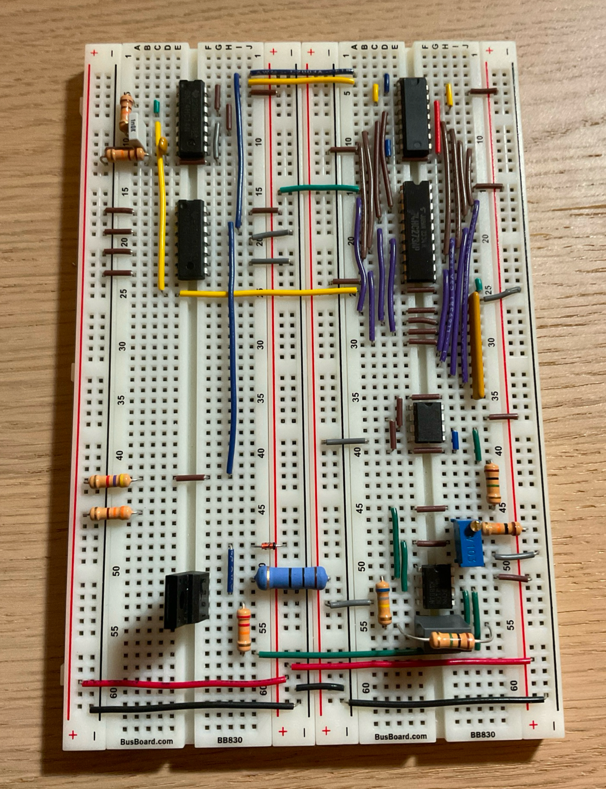
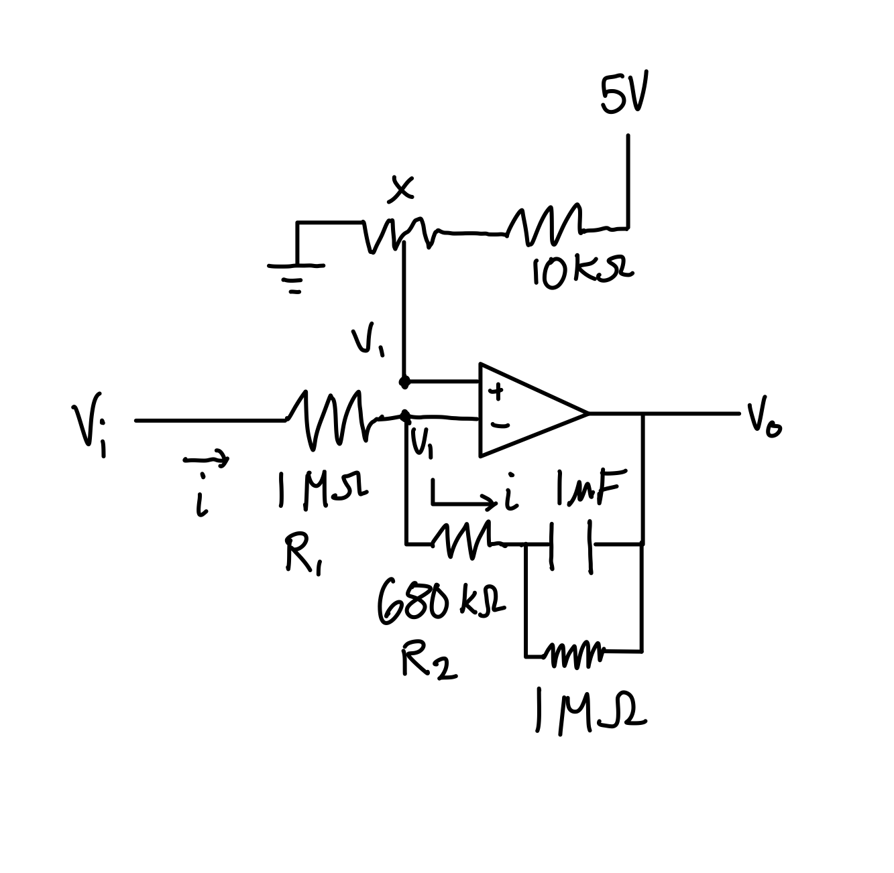
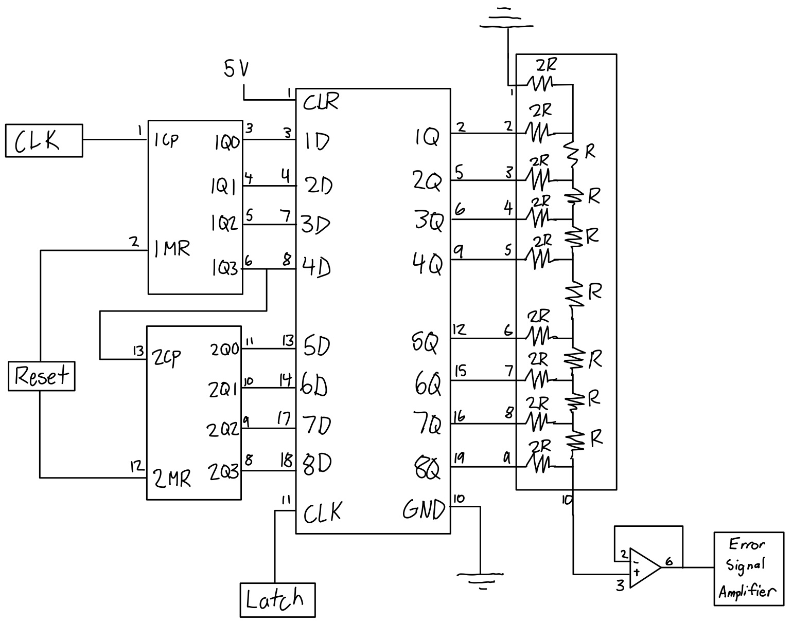
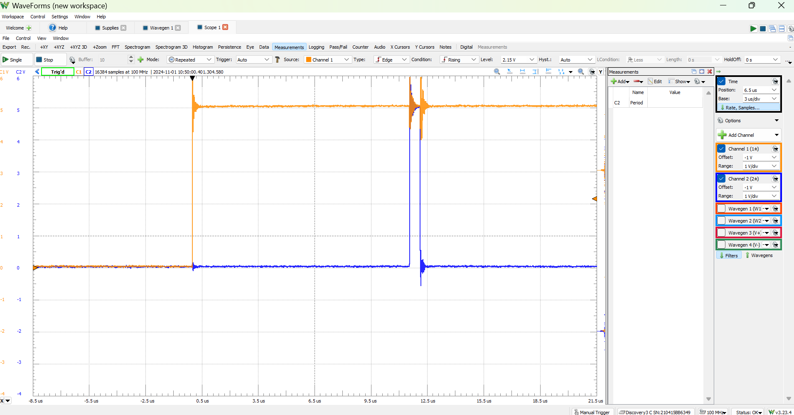

Closed-Loop DC Motor Speed Controller
A circuit that controls the speed of a motor using optical feedback.
I built and tested a closed-loop circuit that controlled the speed of a DC motor using optical feedback, digital logic, and analog electronics. A potentiometer provided an adjustable speed setpoint, while the feedback circuit measured the motor’s rotation and adjusted its drive current.
The system integrated several modules:
- An LED and phototransistor detected slots in a rotating disc, generating pulses proportional to motor speed.
- An 8-bit counter and latch measured and stored the pulse count over a fixed sampling interval.
- An R-2R resistor ladder converted the digital count into an analog voltage.
- An op-amp error amplifier compared the measured speed signal with the setpoint.
- A transistor motor driver adjusted the motor current in response to the feedback signal.
I assembled and tested each module individually before integrating the complete circuit, using an oscilloscope and digital logic measurements to verify timing, pulse counting, and signal processing. During development, I ran into many issues to debug and correct. For example, the op-ap output voltage was offset, which I was able to fix by placing a resistor across the feedback capacitor to provide a DC feedback path to the op-amp.



